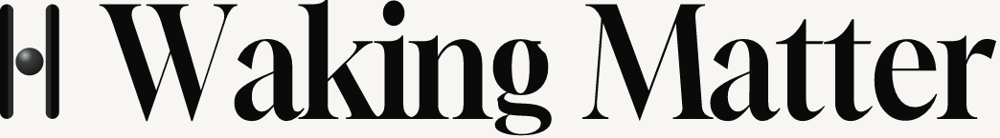

Independent type-gate verdict: REVISE TYPE. Gloock Regular is the right structural direction and the wrong cut — too fashion-editorial, too inky beside the frozen matte mark. This sheet is the smallest next step only: one OFL outlined recut of that structure. Narrower. Less inky. Stronger than Bellefair. Mixed-case, high contrast, two-story a, contained closed g, high-crotch W/M. Gap 0.38 × cap. Mark and word as one inscription. No zoo. No spacing-only second Gloock.

~200 wide is near the lockup minimum. Below 120 wide, mark only.
Parent is Gloock Regular, rejected as too inky. Recut is not a second face: 0.85 × horizontal scale (narrower; vertical stems less inky) and a contained g (smaller closed loop, ear retracted). Two-story a and high-crotch W/M held. Tracking −0.03. Gap 0.38 × cap, same as 04-tight. OFL modification, outlined, not distributed as a font named Gloock.
Bellefair, Noto, Bodoni, Cinzel — already rejected. Newsreader and Fraunces remain controls only. No spacing-only Gloock. Geometry and finish stay frozen. Phase B held. Editorial copy untouched. Shipping Newsreader lockups unchanged. Type not frozen.
One recut. Type not frozen.
Ask whether this cut is less inky than Gloock Regular, stronger than Bellefair, and whether mark and word now read as one inscription against Direction 04. Do not reopen geometry or finish. Do not resume Phase B. Live main is untouched.